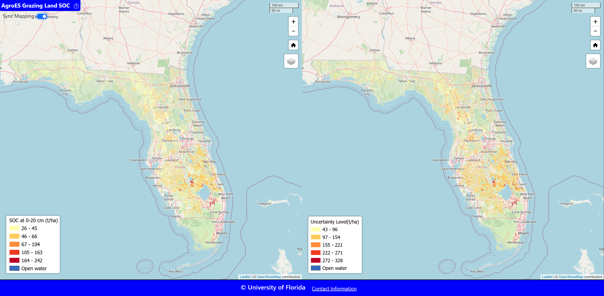

My research applies AI to improve repairability and robotic disassembly in remanufacturing systems as
part of a circular economy.
Robotic Disassembly Planning: Designed a scoring framework to evaluate robotic
feasibility based on component weight, size, shape, accessibility, and positioning. Used MaxViT for
visual estimation and to recommend human–robot collaboration levels.
Repairability Prediction: Developed supervised and unsupervised learning models
using teardown images to score the repairability of electronic products. Techniques include object
detection (ConvNeXt, ResNet50, VGG16) and clustering (ORB + k-means) to uncover design patterns.
These tools support more efficient and scalable remanufacturing decisions.
Intelligent Risk Analysis and Mitigation in Robotics
This research focuses on enhancing operator safety and risk awareness for the applications of
collaborative robotic disassembly tasks.
Motion Uncertainty Modeling: Developed deep learning models (LSTM-Bagging,
GRU-Bagging, BNN-MCD) to predict ranges of hand motion trajectories using IMU data from desktop
disassembly tasks. This enhances safety margins by modeling uncertainty rather than single-point
predictions.
Vision-Based Motion Forecasting: Designed a hybrid system that combines ConvLSTM
(for future-frame generation) and YOLO (for real-time hand detection) on projected human movement.
These tools support intelligent risk mitigation in remanufacturing environments.
Task Allocation in Human-Robot Collaboration
This research develops a decision-making framework to optimize disassembly task allocation between human
operators and robots, supporting sustainable remanufacturing.
Multi-Attribute Utility Modeling: Introduced a utility-based model that considers
disassembly cost, task complexity, and safety, while incorporating uncertainty using Beta
distributions.
Intelligent Task Assignment: Tasks are allocated based on disassembleability,
safety index, and cost profile, identifying optimal human–robot collaboration strategies.
This work supports the development of adaptive, cost-effective, and safe disassembly systems for future
remanufacturing environments.
Geospatial Artificial Intelligence for Ecosystem Services

This research applies deep learning and vision-language models to assess cultural ecosystem services
such as recreation, aesthetics, and cultural value.
Multimodal Pipelines: Integrated image-based and textual data to map human–nature
interactions across landscapes.
Foundation Models: Used Contrastive Language–Image Pre-training (CLIP) and other
large vision-language models for service classification and retrieval.
Scalable Environmental Assessment: Enables data-driven decision support for
conservation, planning, and land management across diverse regions.
This work advances scalable and interpretable tools for understanding ecosystem functions using AI.